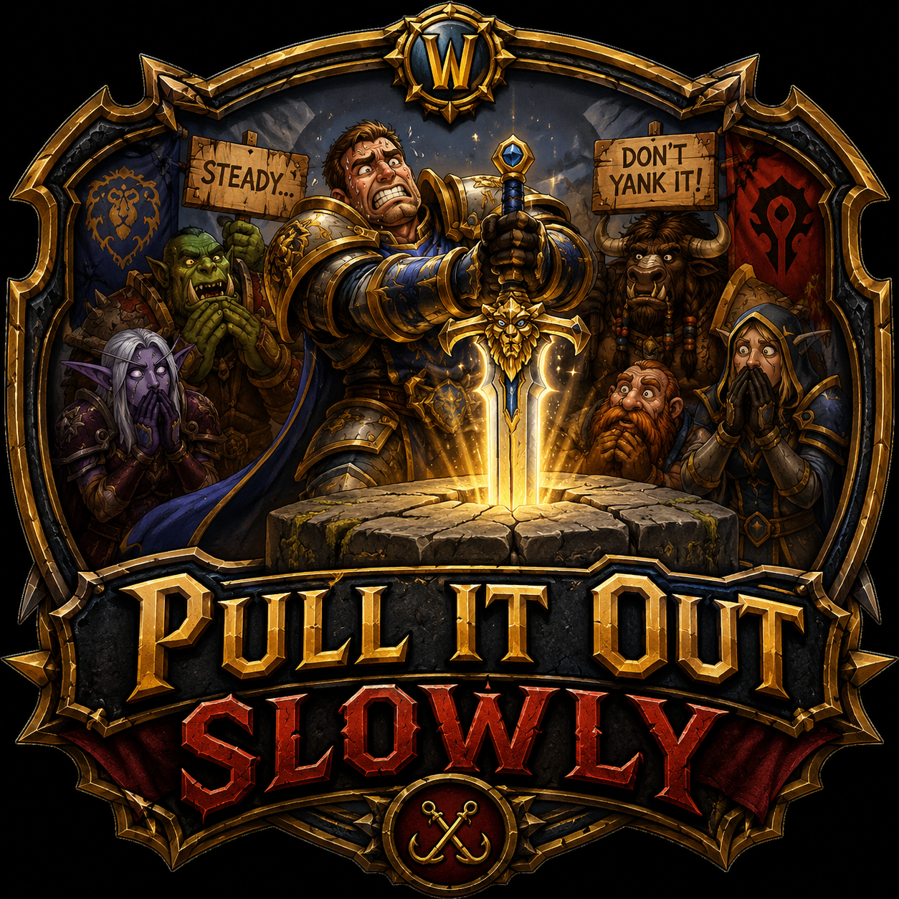

Aggro is a conversation, not a race.
The tank sets the pace. Everyone else reads the room before their next button press.

A World of Warcraft guild
No hero pulls. No skipped mechanics. No apologies for taking our time.
Join the DiscordAbout the guild
Pull It Out Slowly started as a joke about tank etiquette and stuck because it's true. We clear content by understanding it, not by outgearing it. That means slower nights, fewer wipes, and a roster that actually knows what the boss does on pull three.
We're currently active through Midnight, running delves, building professions, and gearing up for whatever comes next. If you'd rather learn a fight than brute-force it, you'll fit right in.
How we play
The tank sets the pace. Everyone else reads the room before their next button press.
We'd rather explain a mechanic once than watch someone learn it the hard way for the fourth time.
We test the edges of a fight so the real attempt isn't a guess. Slow is smooth. Smooth is loot.
Join us
Say hello in Discord and tell us what you're playing. No trial period, no attendance spreadsheet — just show up ready to pull it out slowly.
discord.gg/fZzsrhgz